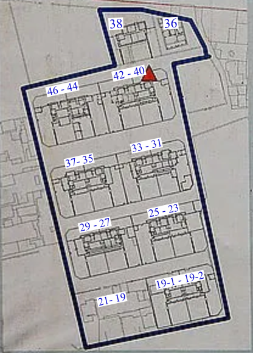

321巷藝術聚落
簡介
- 位置：704 臺南市台南市北區公園路321巷
- 歷史定位：2003年5月13日公告為市定古蹟：原日軍步兵第二聯隊官舍群。曾為成大教授宿舍，其一為台灣知名美術家郭柏川故居。2013年3月23日，正式成立「321巷藝術聚落。
- 網站： Facebook
- 開放時間：本聚落列為古蹟保護，在2020/8/28 - 2023/8/27 三年期間封園整修。
原日軍步兵第二聯隊官舍群 修復工程 展望
「市定古蹟 原日軍步兵第二聯隊官舍群 」是台灣極少數保留完整的日治時期陸軍軍用官舍群，該官舍群於民國35年前後借予國立成功大學作為教授宿舍使用，其中位於公園路321巷27號建物為美術家 郭柏川故居，因此這些宿舍除了是文化資產之外，亦是一處充滿城市記憶的地方。本園區內共有2棟獨棟官舍(199, 38號）與8棟（19, 21, 23, 25, 27, 29, 31, 33, 35, 37, 40, 42, 44, 46)雙併官舍, 其中一棟雙併 (19,21) 官舍於民國89年火損，現存基礎與部分牆體. 修復內容包括9棟古蹟建物及附屬設施、圍牆、庭院等. 修復工程契約金額約為1億5仟多元. 未來古蹟修復完成後，將連結在地藝術、文化、工藝，形塑一處呈現臺南創意特色的古蹟園區
原社區提供早年成大教授居住，除27號住所的藝術家郭柏川 外, 還包含 19-1,2號 羅雲平校長，40號 夏漢民校長, 46號 理學院 張桐生院長 等知名學者。

321 巷藝術聚落
藝術聚落其實是由日治時期的原日軍步兵第二聯隊官舍群所組成，區域內有10棟建築，光復後曾為學校單位如成大的教職員宿舍，有很多臺南的知名人物曾住過這裡，如畫家郭柏川，還有奧斯卡大導演李安也曾住過這附近(惟李安故居已拆除)。「321巷藝術聚落」計畫，遴選出7組藝文團體進駐其中7棟房舍，分別為公園北路199號「臺南人劇團」(表演藝術)、公園路321巷38號「蔚龍藝術有限公司」(文創)、公園路321巷29號「林玉婷與林岱璇」(個人藝術創作者)、公園路321巷27號（郭柏川故居）「那個劇團」(表演藝術)、公園路321巷37號「臺南風景好」(攝影策展)、公園路321巷35號「影響‧新劇場」(表演藝術)、公園路321巷33號「聚作聯合工作室」(設計)等，藝術類型相當豐富多元。
早年321巷成大教授宿舍的歷史回顧
相關網路資訊：
- 2015/11/07: 公園路321巷藝術聚落‧老舊日式宿舍搖身變成藝術展覽
- 2019/05/22: 321巷藝術聚落
- 自由時報 2019/08/04: 台南市定古蹟321巷藝術聚落 11月啟動修復
- 自由時報 2020/07/27: 台南原日軍步兵第二聯隊官舍群 啟動古蹟修復
- 2018/07/30: 台南景點｜321巷藝術聚落，漫步日式建築群穿梭藝術巷弄裡
- 哇靠台南 321巷藝術聚落
- Youtube 2018/03/17: 台南輕旅行 321巷藝術聚落，一處充滿日式建築文藝景點
- Youtube 2018/02/08: 哈臺南 - 第一集：321巷藝術聚落
- Youtube 2019/06/16: 321巷藝術聚落
- 歷史保存：公園路321巷-3D圖
 29 號
29 號
 44 號
44 號